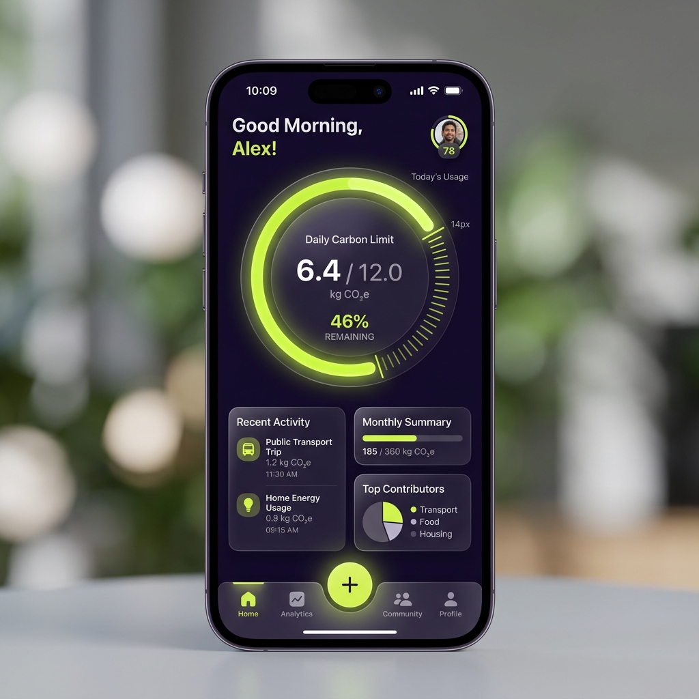
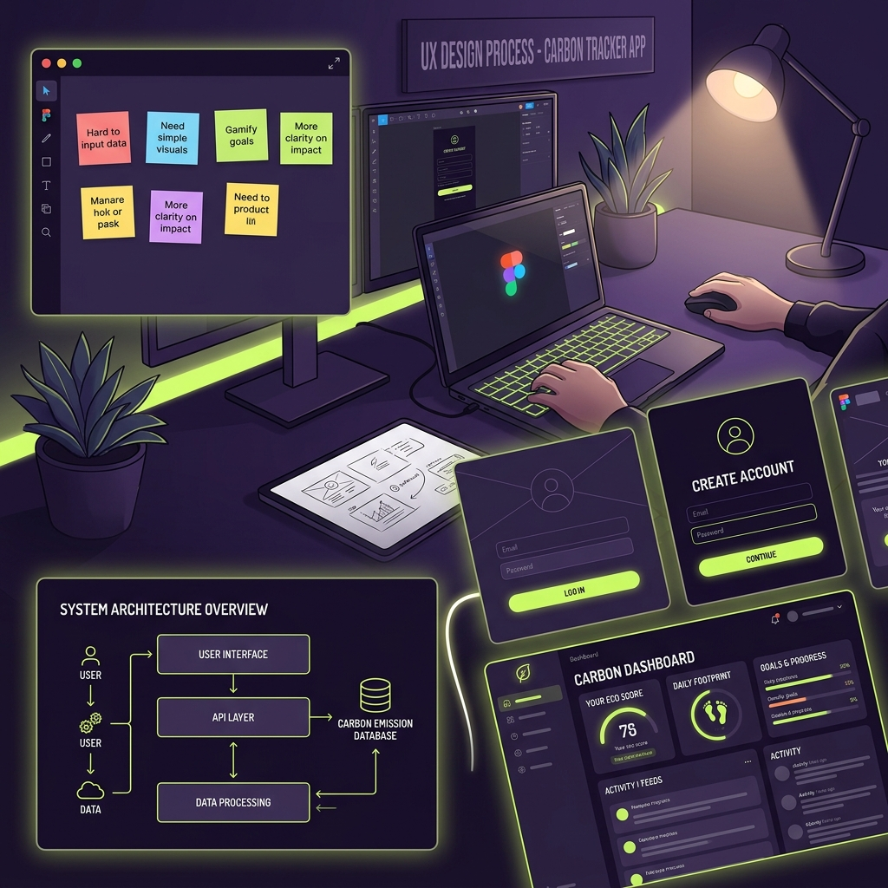
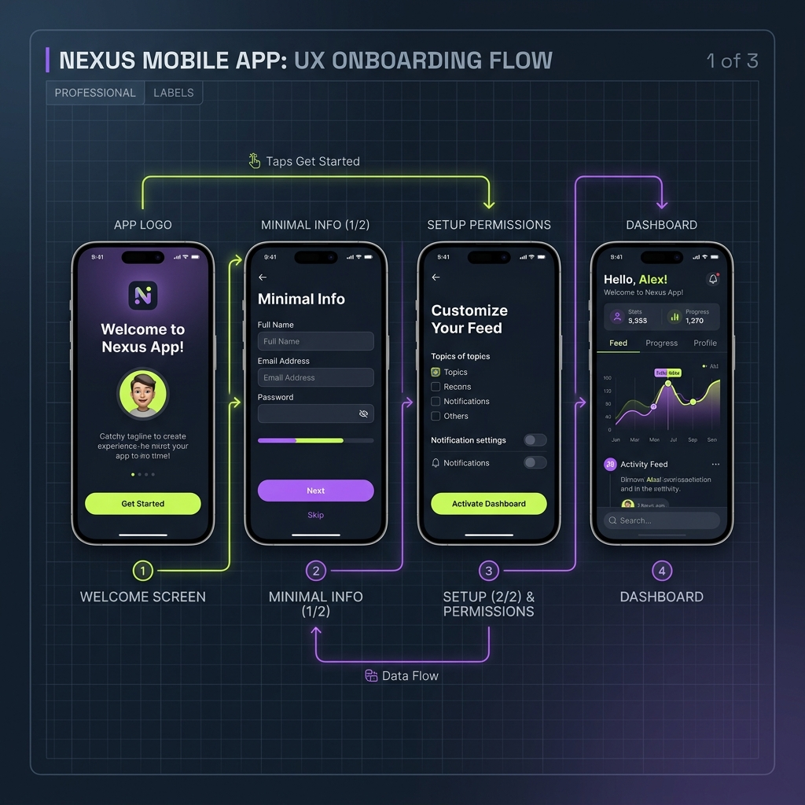

A radical simplification for nutritional management using multi-modal AI to eliminate the manual logging burden.

Born from the daily reality of living with Type 1 Diabetes, where counting every carb is vital but exhausting.
Created for a family member to simplify the tedious task of database searching and weighing ingredients before every meal.
Users can log meals in seconds using voice notes, photos, or natural language—shifting the burden to the AI.
Moving away from clinical, cold interfaces to an assistant-led experience that feels like a companion, not a chore.
I accelerated the jump from visual canvas to production by developing a custom Node.js script that extracts Figma variables and compiles them into modular CSS tokens.
const parseTokens = (figma) => {
const tokens = figma.getVariables();
return tokens.map(t => ({
name: `--carby-${t.name}`,
value: t.values['Dark']
}));
};
// Automating consistent identity
// across Design and Development.Built with a "Vibecoding" approach—iterating at high speed between environments. The backend features surgical serverless functions and a multi-model redundancy system.
async function analyzePlate(frame) {
try {
const result = await anthropic.vision(frame);
return result.carbEstimate;
} catch (err) {
// Instant Fallback to Groq
return await groq.processor(frame);
}
}From deep user pain points to an intelligent, assistive ecosystem.
Interviews revealed that the "pre-meal mental load" was the biggest stressor for diabetic patients. We decided to move the entire calculation burden to the AI engine.

Using iterative prompts in Midjourney and DALL-E, I conceived "Carby"—a 3D-styled companion with modular emotions to guide the user in an encouraging way.
Our V1 wizard was too heavy. In V2, we reduced data collection to optional steps. This drastically improved "Time to Value," letting users explore the UI immediately.

The final application was built using a Designer-Led AI flow, ensuring that while AI moved the bricks, the strict UX guardrails and branding remained primary.
Explore how health-tech can be empathetic AND powerful.